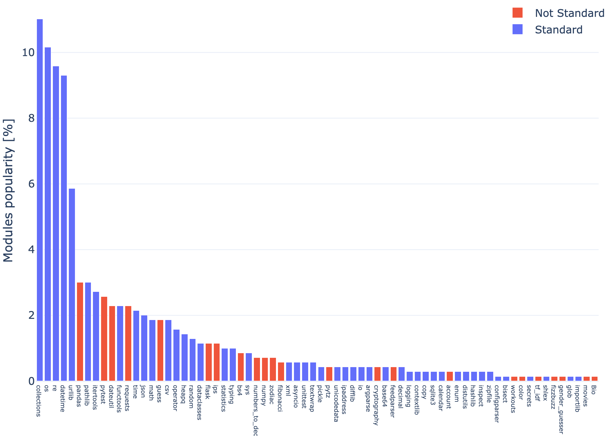

Abstract Syntax Trees in Python
Alessandro Finamore, Sat 20 February 2021, Concepts
Alessandro Finamore, Sat 20 February 2021, Concepts
ast Python module and its useast module to investigate the PyBites Bite exercises
ast module
ast module APIs
Requirement: All examples are compatible with at least Python v3.6, except for using
ast.dump()with the attributeindent=which has been added in Python v3.9.
An Abstract Syntax Tree (AST) is a data structure used to reason about the grammar of a programming language in the context of the instructions provided into source code.
For instance, compilers use ASTs when transforming source code into binary code:
Given some text source code, the compiler first tokenizes the text to identify programming language keywords, variables, literals, etc. Each token represents an "atom" of an instruction.
Tokens are then rearranged into an AST, a tree where nodes are the "atoms" of the instructions, and edges the relationships between the atoms based on the programming language grammar. For instance, the AST make explicit the presence of a function call, the related input arguments, the instructions composing the function, etc.
The compiler then can apply multiple optimizations to the AST, and ultimately converts it into binary code.
Despite their role for compilers, ASTs are useful for a broader set of use-cases. Let's discuss this more in details.
ast Python module and its useThe ast module in the Python standard library can be used to create, visit, and modify AST related to Python source code. It has been introduced in Python 2.6, and since then it evolved alongside the Python grammar.
Even if it is part of standard library since a long time, it is not common to use it directly. Rather, you might have used it indirectly as popular tools use it under-the-hood:
code testing: mutpy is a mutation testing tool used to alters the code under testing to broaden the set of tests in an automated fashion. In practice a mutation is an artificial modification of the AST generated from the code under testing. To see how PyBites uses mutpy, check out this article.
code coverage: vulture is a static code analyzer that studies an AST to identify portion of the code not used.
code vulnerabilities: bandit uses the AST representation to identify security vulnerabilities.
code autocompletion: jedi is an IDE and text editors autocompletion tool relying on the ast module functionality to safely evaluate expressions.
code reformating: black and flake8 are two popular tools to enforce code reformatting, and they both use an AST representation of the source code to apply their formatting rules.
ast module to investigate the PyBites Bite exercisesStill not convinced of the relevance of an AST? Fair enough: let's consider a more practical, and closer to the PyBites Platform, use-case.
The PyBites Platform is currently offering 300+ Bite exercises, and the number is constantly increasing. Given the (semi)hidden intention of the platform is to offer a varied set of challenges covering different Python modules and functionalities, it starts to be more and more challenging to identify what is covered by already available exercises, and what is instead left to explore.
This is where we can take advantage of the ast module. Specifically, we can process the source code of the solution of the exercises (as provided by the authors of the challenges) and recover some statistics about their content. For instance, which are the popular modules and builtin functions used.
Here some of the results.
The histogram above shows the Python builtin calls sorted by their popularity. In other words, using the ast module one can detect when a function call has been made, and if it relates to the builtins module or not. Three colors are used to visually distinguish between exception types, the creation of base types (int, float, bool, list, and set), or other functions. The histogram is a normalized frequency count, i.e., the frequency of each element is cumulated across all exercises, and divided by the sum of all elements occurrence across all exercises.
A few observations:
The distribution is heavy tailed, with len() representing 13.4% of all builtin calls, while dir() being used only once.
All five base types are used, but bool() is used only in 1 challenge.
Only 5 of the standard exceptions are used, with ValueError being the most common.
Most of the builtin functions are already used by exercises, but considering the functional programming calls you can notice that map() appears while filter() does not (as indeed the common practice is to prefer list comprehension).

The histogram above shows the ranking for modules. For simplicity we limit to report on the root modules only. If submodules are used, their frequencies are cumulated into the frequency of the respective root modules.
As before, the histogram is heavy tailed, a testament that the PyBites Bite exercises try to "cover a little bit of everything".
We can observe the presence of non-standard modules, such as pandas and pytest, as well more ad-hoc modules such as as zodiac and fibonacci that are created for the purpose of the challenges themselves.
One can easily expand the analysis to understand the functions used in each module/submodule, as well as dive into more specific analysis. What is relevant to highlight is that the results reported here are generated with about 50 lines of Python code and using ast module. Processing the 300+ source code files with tools like awk, grep, or anything else would have been significantly harder.
Hopefully this examples gave you a rough idea of what you can achieve with an AST. The next step is to understand how to create such data structures, and investigate their composition.
ast moduleTo start familiarize with the ast module, let's see what happens when we analyze a single instruction: one_plus_two = 1+2
>>> import ast
>>> code = "one_plus_two = 1+2"
>>> tree = ast.parse(code)
>>> ast.dump(tree, indent=4)
This will output:
Module(
body=[
Assign(
targets=[
Name(id='one_plus_two', ctx=Store())],
value=BinOp(
left=Constant(value=1),
op=Add(),
right=Constant(value=2)))],
type_ignores=[])
It might not be obvious at first, but the output generated by ast.dump() is actually a tree:
The words starting with capital letter are nodes of the tree.
The attributes of the nodes are either edges of the tree or metadata.
Let's rework the output into a diagram with the following conventions:
One rectangle for each node, marking in bold the related node type.
Node attributes collecting metadata are reported in blue.
Other node attributes are annotated with their type.
Nodes are connected based on their attributes.

With this visualization at hand we can observe a few things.
The root of the tree is a Module node. In fact, even if our example is a single line program, it is still a true Python module. The node contains two attributes body and type_ignores. Let's put the aside type_ignores for a moment and focus on body.
As a Python module contains a series of instructions, the Module.body attribute is a list of nodes, one for each instruction in the program. Our example consists of a single assignment operation, hence Module.body contains only one Assign node.
An assignment operation has a right-hand side specifying the operation to perform, and a left-hand side specifying the destination of the operation. The two sides are associated to the Assign.value and Assign.targets attributes of the Assign node.
Considering the right-hand side, the Assign.value attribute is a BinOp node, since the instruction is a binary operation between two operands, which is fully specified with three attributes:
BinOp.op is a Add node given we are performing an addition.
BinOp.left and BinOp.right are the addition operands and consist of Constant nodes, each holding the raw value in the Constant.value attribute.
Considering the left-side, as Python supports multiple assignments and tuple unpacking, the Assign.targets attribute is a list collecting the different destinations of the operation. In our case the assignment is for a single variable, so a single Name node is used. In turn, the Name node has 2 attributes:
Name.id stores the name of the variable used in the program ("one_plus_two").
Name.ctx specifies how variable reference is used in the program. This can only be one of types ast.Load, ast.Remove or ast.Store, but those are always empty nodes.
Module.type_ignores attribute and type commentsThe attribute Module.type_ignores in the vast majority of the cases is going to be an empty list. This is why in the sketch is colored in blue. To understand why this is the case and what is the actual purpose of the attribute, we need to make a digression.
Python 3.0 introduced annotations, and few years later those have been expanded into type hints. If you are not familiar with those concepts, check this Real Python tutorial and the official doc.
Those changes were not back ported to Python 2, which instead was using type comments as a form of annotation. For more information, see PEP 484 or this Real Python tutorial.
The attribute Module.type_ignores refers to a special type comment # type: ignore that was used to indicate to type checker (such as mypy) to suppress errors if one was found. For legacy reasons, the ast module is still reporting on those comments, but only when asked to do so.
Let's see an example.
>>> code = 'one_plus_two = 1+2 # type: int'
>>> tree = ast.parse(code, type_comments=True)
>>> print(ast.dump(tree, indent=4))
This will output:
Module(
body=[
Assign(
targets=[
Name(id='one_plus_two', ctx=Store())],
value=BinOp(
left=Constant(value=1),
op=Add(),
right=Constant(value=2)),
type_comment='int')],
type_ignores=[])
Notice that the only difference with respect to the detailed analysis of the AST previously discussed is the presence of the attribute Assign.type_comment='int'. The attribute reflects the metadata provided by type comment # type: int, and is added to the AST tree Assign node because we specified type_comment=True when triggering the parsing.
However, # type: ignore is treated differently. Those type comments are stored into the Module.type_ignores attribute as TypeIgnore objects rather than being collected as metadata in the inner nodes of the tree.
>>> code = 'one_plus_two = 1+2 # type: ignore'
>>> tree = ast.parse(code, type_comments=True)
>>> print(ast.dump(tree, indent=4))
This will output:
Module(
body=[
Assign(
targets=[
Name(id='one_plus_two', ctx=Store())],
value=BinOp(
left=Constant(value=1),
op=Add(),
right=Constant(value=2)))],
type_ignores=[
TypeIgnore(lineno=1, tag='')])
ast module APIsThe ast module is mostly a large collection of classes, one for each of the different aspects of the Python grammar. Overall, there are about 100 classes, ranging from literals, to more complex construct such as list comprehensions.
ast.AST is the base class for all other classes in the module, and it defines the following base attributes for all AST nodes:
lineno, col_offset, end_lineno, and end_col_offset are used to track the precise position of the related instruction in the source code.
_fields contains the list of attribute names (you can think that is a list of "children" names).
When dealing with an AST the trickiest part is understanding nodes and attributes semantic. In fact, there are a lot of variants and corner cases, so it is easy to get confused.
A good way to start to familiarize with an AST is to use an interactive console such as ipython similarly to what we did in the previous examples. If you are used to an IDE, both PyCharm and Visual Studio Code provide plugins to visualize an AST (notice that PyCharm uses its own version of AST called Program Structure Interface - PSI)
No matter your preferred choice, the documentation is a fundamental resource to keep at hand. Yet, a couple of remarks:
Given that the Python language is in constant evolution, make sure to use the most recent version of the Python doc.
The official documentation also suggests to consult Green Tree Snake, which indeed does a good job at complementing the official documentation on parts that that otherwise would seem "dry" of details.
Beside the classes, the ast module defines how to perform a visit of a tree, and how to do transformations.
You can visit an AST in two ways: using helper functions, or via an ast.NodeVisitor class.
Let's starts reviewing the helper functions:
ast.walk() visit the specified node, and recursively all its descendant, but in a non specified order.
ast.iter_fields() and ast.iter_child_nodes() are similar to .items() and .keys() of a dict data structure, but applied to a specific node only, and they are not recursive.
Here some examples:
>>> import ast
>>> code = "one_plus_two = 1+2"
>>> tree = ast.parse(code)
>>> for node in ast.walk(tree):
print(node.__class__.__name__)
Module
Assign
Name
BinOp
Store
Constant
Add
Constant
>>> for name, value in ast.iter_fields(tree):
print(name, value)
body [<_ast.Assign object at 0x10c60be80>]
type_ignores []
>>> for node in ast.iter_child_nodes(tree):
print(node.__class__.__name__)
Assign
When using an ast.NodeVisitor instead, one can register specific callbacks to trigger when visiting specific node types:
class BinOpVisitor(ast.NodeVisitor):
def visit_BinOp(self, node):
print(f"found BinOp at line: {node.lineno}")
self.generic_visit(node)
In this example:
We define a class BinOpVisitor extending the ast.NodeVisitor.
We register a callback to be triggered when ast.BinOp nodes are visited. The name of callback is always visit_XYZ where XYZ is one of the predefined node types name (BinOp in our case).
When the callback is invoked it receives the reference of the node under analysis. In this example we use the node info to print the line number of the instruction it relates to.
Finally, we invoke self.generic_visit(node) to propagate the visit on the children of the input node.
What sort of black magic happens behind the scene to trigger the callbacks? It is actually simple. A ast.NodeVisitor also defines a visit() function which is always invoked first: if the input node type matches one of the callbacks, such callback is called, otherwise generic_visit() is invoked to visit the node children. In our example we are not overwriting visit(), hence we can trigger a visit of the tree simply invoking the method:
>>> vis = BinOpVisitor()
>>> vis.visit(tree)
Here the complete example:
import ast
class BinOpVisitor(ast.NodeVisitor):
def visit_BinOp(self, node):
print(f"found BinOp at line: {node.lineno}")
self.generic_visit(node)
code = """
left_op = 1
right_op = 2
sum_two_things = left_op + right_op
other_sum = sum_two_things - 1
print(sum_two_things)
print(other_sum)
"""
tree = ast.parse(code)
print("=== full AST ===")
print(ast.dump(tree, indent=4))
print()
print("=== visit ===")
vis = BinOpVisitor()
vis.visit(tree)
Running the program we obtain the following output:
=== full AST ===
Module(
body=[
Assign(
targets=[
Name(id='left_op', ctx=Store())],
value=Constant(value=1)),
Assign(
targets=[
Name(id='right_op', ctx=Store())],
value=Constant(value=2)),
Assign(
targets=[
Name(id='sum_two_things', ctx=Store())],
value=BinOp(
left=Name(id='left_op', ctx=Load()),
op=Add(),
right=Name(id='right_op', ctx=Load()))),
Assign(
targets=[
Name(id='other_sum', ctx=Store())],
value=BinOp(
left=Name(id='sum_two_things', ctx=Load()),
op=Sub(),
right=Constant(value=1))),
Expr(
value=Call(
func=Name(id='print', ctx=Load()),
args=[
Name(id='sum_two_things', ctx=Load())],
keywords=[])),
Expr(
value=Call(
func=Name(id='print', ctx=Load()),
args=[
Name(id='other_sum', ctx=Load())],
keywords=[]))],
type_ignores=[])
=== visit ===
found BinOp at line: 4
found BinOp at line: 5
A ast.NodeTransformer can be used as base class for a transformers, similarly to the logic used for the visitor class. This time, rather than simply visiting the nodes, the callbacks are used to modify, replace, add new nodes.
Here an example:
import ast
import random
class ConstantTransformer(ast.NodeTransformer):
def visit_Constant(self, node):
new_value = random.randint(-10, 10)
new_node = ast.Constant(new_value)
print(f"replacing constant {node.value} -> {new_value} at lineno: {node.lineno}")
return new_node
In this example:
We registered a callback to be triggered when handing a ast.Constant node.
The callback generates a random number between (-10, 10), creates a new ast.Constant() node with the generated value, and reports a message on the standard output.
Finally, it returns the reference of the new node.
The reference returned by the callbacks represent the node to use in the AST. In this example we are replacing the original node. When returning None instead, the visited node is removed from the tree.
To trigger the transformation, we use the same operation used for the visit. This time the visit returns the reference of the tree modified:
>>> vis = ConstantTransformer()
>>> new_tree = vis.visit(tree)
Here the full example:
import ast
import random
class ConstantTransformer(ast.NodeTransformer):
def visit_Constant(self, node):
new_value = random.randint(-10, 10)
print(f"replacing constant {node.value} -> {new_value} at lineno: {node.lineno}")
new_node = ast.Constant(new_value)
return new_node
def exec_tree(tree):
print()
print("=== AST ===")
print(ast.dump(tree, indent=4))
print('---')
tree_fixed = ast.fix_missing_locations(tree)
code_obj = compile(tree_fixed, '<string>', 'exec')
exec(code_obj)
code = """
left_op = 1
right_op = 2
sum_two_things = left_op + right_op
other_sum = sum_two_things - 1
print(sum_two_things)
print(other_sum)
"""
tree = ast.parse(code)
exec_tree(tree)
## fix seed
random.seed(10)
## apply the transformations
vis = ConstantTransformer()
new_tree = vis.visit(tree)
The source code in code is the same as the one used to do a simple visit. Likewise, the process to generate the related tree.
Then we fix a seed for the random number generator via random.seed(), so to have consistent output when running the program multiple times.
We create a ConstantTransformer() object, and we visit it obtaining new_tree, which is a transformed version of the original tree.
To verify the transformations, we can print the AST, and "run it" by transforming into executable code. To do so, we use the helper function exec_tree():
We start printing the content of the tree using ast.dump() as seen in previous examples.
We then apply ast.fix_missing_locations() to the tree. Each node in the AST is indeed expected to have lineno filled, but rather than filling it when doing the transformations, the helper function ast.fix_missing_locations() allows to delay this fix until the compilation is required.
Finally, the builtin function compile() is used to transform the AST to a code object, which in turn is executed calling the builtin exec().
Here the output related to exec_tree(tree):
=== AST ===
Module(
body=[
Assign(
targets=[
Name(id='left_op', ctx=Store())],
value=Constant(value=1)),
Assign(
targets=[
Name(id='right_op', ctx=Store())],
value=Constant(value=2)),
Assign(
targets=[
Name(id='sum_two_things', ctx=Store())],
value=BinOp(
left=Name(id='left_op', ctx=Load()),
op=Add(),
right=Name(id='right_op', ctx=Load()))),
Assign(
targets=[
Name(id='other_sum', ctx=Store())],
value=BinOp(
left=Name(id='sum_two_things', ctx=Load()),
op=Sub(),
right=Constant(value=1))),
Expr(
value=Call(
func=Name(id='print', ctx=Load()),
args=[
Name(id='sum_two_things', ctx=Load())],
keywords=[])),
Expr(
value=Call(
func=Name(id='print', ctx=Load()),
args=[
Name(id='other_sum', ctx=Load())],
keywords=[]))],
type_ignores=[])
---
3
2
The output for exec_tree(new_tree):
replacing constant 1 -> 8 at lineno: 2
replacing constant 2 -> -9 at lineno: 3
replacing constant 1 -> 3 at lineno: 5
=== AST ===
Module(
body=[
Assign(
targets=[
Name(id='left_op', ctx=Store())],
value=Constant(value=8)),
Assign(
targets=[
Name(id='right_op', ctx=Store())],
value=Constant(value=-9)),
Assign(
targets=[
Name(id='sum_two_things', ctx=Store())],
value=BinOp(
left=Name(id='left_op', ctx=Load()),
op=Add(),
right=Name(id='right_op', ctx=Load()))),
Assign(
targets=[
Name(id='other_sum', ctx=Store())],
value=BinOp(
left=Name(id='sum_two_things', ctx=Load()),
op=Sub(),
right=Constant(value=3))),
Expr(
value=Call(
func=Name(id='print', ctx=Load()),
args=[
Name(id='sum_two_things', ctx=Load())],
keywords=[])),
Expr(
value=Call(
func=Name(id='print', ctx=Load()),
args=[
Name(id='other_sum', ctx=Load())],
keywords=[]))],
type_ignores=[])
---
-1
-4
The output now is "randomized", as expected by the transformation. However, the transformation has overwritten the original tree, as new_tree and tree are the same object.
>>> id(tree), id(new_tree)
4350659920, 4350659920
To avoid this however one simply use the copy module to clone the whole tree before triggering the transformation, or overwrite the visit() method and define the ad-hoc logic for the use-case at hand.
Keep calm and happy Python coding!
-- Alessandro
Do you want to get 250+ concise and applicable Python tips in an ebook that will cost you less than 10 bucks (future updates included), check it out here.

"The discussions are succinct yet thorough enough to give you a solid grasp of the particular problem. I just wish I would have had this book when I started learning Python." - Daniel H
"Bob and Julian are the masters at aggregating these small snippets of code that can really make certain aspects of coding easier." - Jesse B
"This is now my favourite first Python go-to reference." - Anthony L
"Do you ever go on one of those cooking websites for a recipe and have to scroll for what feels like an eternity to get to the ingredients and the 4 steps the recipe actually takes? This is the opposite of that." - Sergio S